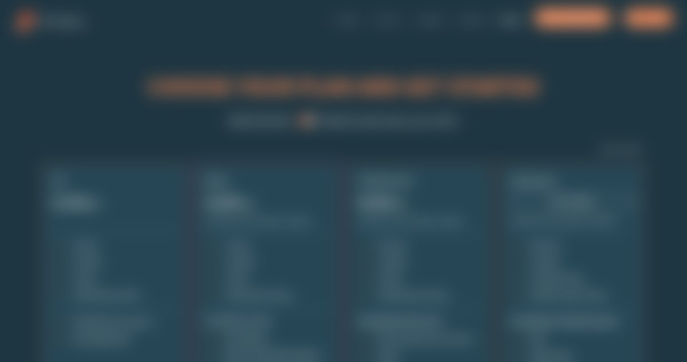

Case Study 01
Product-Led Growth — Viz Flowics
Turning a sales-led SaaS into a self-serve growth engine.
🔒 Visuals are blurred and screens are illustrative — under NDA with my former employer. Happy to walk through the live product in an interview.
Overview
Viz Flowics is a broadcast graphics SaaS platform historically sold through direct, sales-led conversations. Leadership wanted to explore a self-serve growth motion — but before designing anything, the team needed to understand exactly where and why prospects were dropping off.
The Problem
I led research to diagnose the funnel and found a 1.05% conversion rate, with friction compounding across nearly every step — not a single broken screen, but a systemic gap in how the product supported self-guided evaluation.
- No public pricing — prospects had to talk to sales just to know what the product cost.
- No self-serve trial path — every trial required manual setup from the sales team.
- Unclear plan boundaries — feature access wasn't tied to any visible plan structure.
- Drop-offs in the purchase flow itself — even users who reached checkout weren't converting reliably.
This wasn't a UI problem — it was a systemic gap in the growth model.
The redesigned self-serve subscription view — blurred, real screen under NDA.
My Approach
I designed a self-serve growth system end-to-end — not a single feature, but the connective tissue between pricing, onboarding, and feature access.
- Public pricing page — removed the sales gate to basic product information.
- Plan-based feature gating — designed as a flexible system rather than one-off restrictions, so it could scale as new plans were introduced.
- Redesigned onboarding — let users start exploring the product without a sales conversation first.
- Structured user testing on the purchase flow — prototyped, ran tests, and analyzed results before shipping, since it was the highest-friction, highest-impact point in the funnel.
Throughout the project I iterated closely with engineering, validating technical feasibility and adjusting scope as real constraints surfaced — this was open, cross-team decision-making, not a handoff.

The public pricing page — blurred, real screen under NDA.
Impact
Beyond the number, this project established a repeatable self-serve growth motion in place of a one-off, sales-dependent activation process — and it set the foundation for later PLG work on activation and onboarding.
What This Shows
This project moved beyond individual screens into designing a growth system — aligning UX decisions with product strategy and measurable business impact.